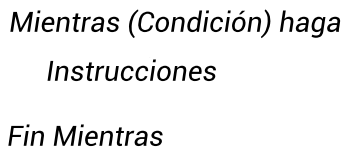

Concepto
La estructura repetitiva mientras es aquella en que el cuerpo del bucle se repite mientras se cumple una determinada condición. cuando se ejecuta la instrucción mientras, la primea cosa que sucede es que se evalúa la condición. si se evalúa falsa, no se toma ninguna acción y el programa prosigue en la siguiente instrucción del bucle. si la expresión booleana es verdadera, entonces se ejecuta el cuerpo del bucle, después de lo cual se evalúa de nuevo la expresión boolena. este proceso se repite una y otra vez mientras la expresión booleana sea verdadera.
Este tipo de estructuras repetitivas se caracteriza por:
• No necesariamente se conoce el número de veces que se repite el proceso.
• Se utilizan las condiciones para generar la repetición del proceso, siempre y cuando se cumpla la condición, es decir, sea verdadera. El ciclo culmina cuando la condición se convierte en falsa, por lo tanto, es necesario que las variables que participan en la condición sean modificadas dentro del ciclo para que la condición pueda convertirse en falsa.
• Las operaciones que se repiten son las que son comunes para los objetos a los cuales se les realizará dichas operaciones.
• Al igual que el ciclo anterior se utilizan conceptos de Acumulador y Contador.
Pseudocodigo
